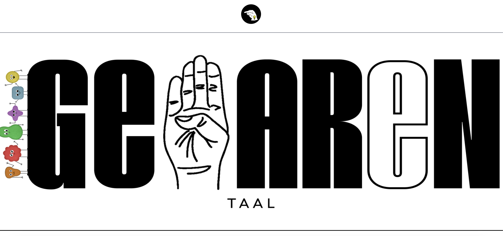

Over het project
Voor het keuzevak 'Gebarentaal bij intake' aan de Hogeschool Rotterdam hebben we een gebarentaal-tool ontwikkeld. Het doel was om studenten te ondersteunen bij het leren en oefenen van gebarentaal tijdens intakegesprekken.
De website bevat interactieve quizzen, een woordenboek met video's en een admin-pagina voor de docenten om studenten te beheren.
Wat heb ik gedaan?
- De basis van de homepage opgezet en de structuur bepaald.
- Tailwind CSS toegepast om een moderne en responsieve lay-out te creëren.
- Een interactieve woordenboekpagina gebouwd met zoek- en filterfuncties.
- JWT-authenticatie geïmplementeerd voor beveiligde toegang.
- Een admin-pagina gemaakt om studenten toe te voegen, te verwijderen en te bewerken.
- Camera- en handtracking verbeterd voor correcte gebarenherkenning.
Galerij
